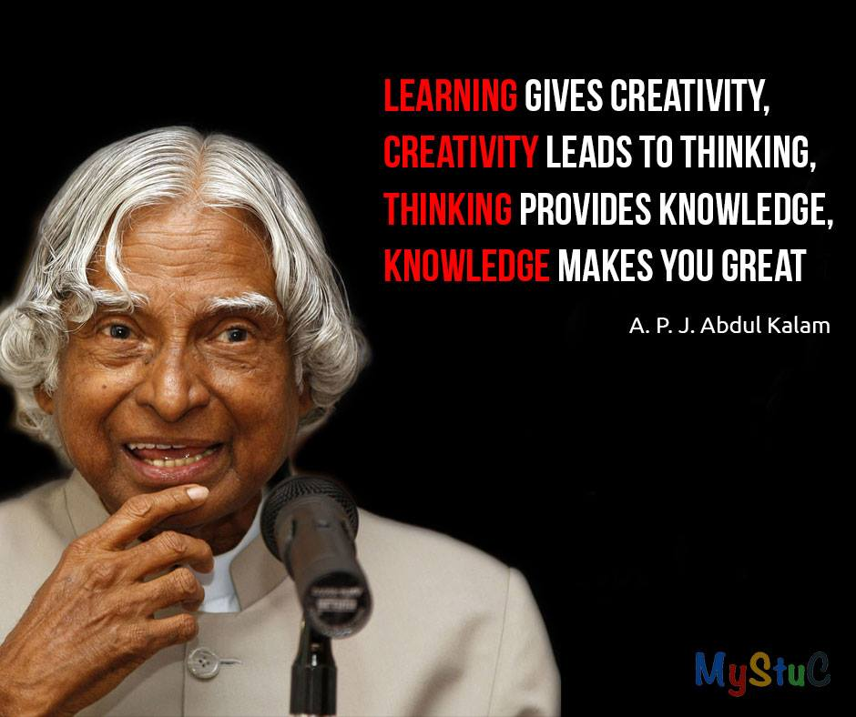

Bharat Ratna, the highest civilian award in India. Bharat translates to “India” and ratna to “gem” or “jewel.” Instituted by the government in 1954, the Bharat Ratna is given in recognition of “exceptional service” or “performance of the highest order” in “any field of human endeavour.” Although the Bharat Ratna is usually limited to a maximum of three awards per year, in 1999 the government deferred that restriction and awarded the Bharat Ratna to four people, and in 2024 five recipients were announced. The Bharat Ratna awards were temporarily suspended between mid-1977 and early 1980 and then between mid-1992 and 1995, following changes in the federal government and some lawsuits, respectively. Also, the Bharat Ratna is not necessarily awarded every year. Since its inception, there have been years when no Bharat Ratna has been awarded. Recommendations for the award are made by the prime minister to the president of the country. Bharat Ratna recipients are awarded a medallion and a certificate (sanad) signed by the president of India.
Bidhan Chandra Roy (born July 1, 1882, Bankiporei, India—died July 1, 1962, Calcutta [Kolkata]) was a physician, philanthropist, and political leader. He was the second chief minister of West Bengal (1948–62). Known as a visionary leader who helped in the modernization and development of West Bengal after independence from British rule, he established the Indian Medical Association and the Medical Council of India and set up some of the leading medical institutions in Calcutta